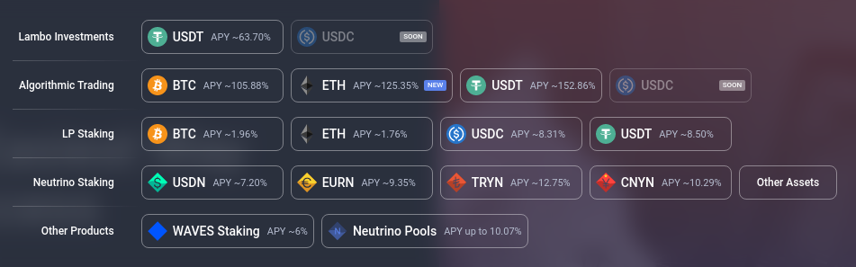

What is AnonEuro?
AnonEuro is a stablecoin based on Waves ecosystem and Neutrino protocol that is valued at 1:1 with Euro rate, which makes it a decentralised bank account under control of the account holders and for that reason has cca. 35% annual interest on savings with daily payments without staking.
Interest is earned on an almost identical principle as in the classic banking system, but in the case of AnonEuro it is not retained by any bank or international criminal banking cartels, but the earnings are returned to the AnonEuro customers, who are basically its owners. The money that the customer places into the AnonEuro account is invested in projects within the Waves ecosystem in direct democratic and transparent processes in which anyone can participate, and these projects then return part of the earnings to those who invested in them, i.e. users of AnonEuro and other equivalent cryptocurrencies.
Financial experts decide about investments, there are many projects so even if one of the projects falls through it only means lower interest for the end user. Although there is a certain risk (which comes with classic banking system as well), in this way it is minimised.
Some of the investment programs can be seen on the picture below or by visiting the Waves Exchange page.
AnonEuro can be used by AnonEuro wallet or original Waves wallet, but the Waves wallet is less user friendly than AnonEuro wallet which is far more simplified and adapted to AnonEuro itself. Both wallets enable fast and simple sending, receiving and changing AnonEuro for other cryptocurrencies or "real" (fiat) money (EUR, USD, etc.).
AnonEuro transaction price is EUR 0.05 (5 cents) regardless of the amount transferred and that money goes to people who maintain decentralised computer network around the globe which holds the Waves' ecosystem infrastructure and AnonEuro's itself as well. This enables for AnonEuro to not to be prohibited because computers which maintain network are outside the legal jurisdictions of individual states. E.g. somebody in Indonesia or Nigeria doesn't care if AnonEuro is prohibited in Croatia or not.
We explain this as it is clear that international power centers will try to stop this project as they are trying with all other similar projects. Behind AnonEuro project there is nobody who can be punished, it's just an open source software which motivates people around the globe by earnings to maintain it's infrastructure and enables anonymity and privacy of it's users.
What is AINT (banking) token?
Kriptokuna je od samog početka gotovo kompletno decentralizirana, ali je proces pretvaranja kuna u kriptokune i kriptokuna u kune još uvijek pomalo zamršen i kompliciran za običnog korisnika.
Naime, da bi korisnik uplatio novac na kriptokunski račun i počeo uživati u blagodatima kamate, prvo mora zamijeniti "pravi" novac (kune, eure ili nešto treće) u Waves tokene koristeći neku od crypto mjenjačnica te zatim poslati Waves tokene na adresu (broj računa) Kriptokune. Tek po završetku tog procesa, na njegov će kriptokunski račun sjesti kriptokune. Naravno, proces ide i obratno za isplatu s računa dok je proces slanja i primanja s računa na račun gotovo trenutan.
Za ovo preporučujemo Bitcoin mjenjačnicu u Hrvatskoj pod nazivom Bitcoin Store.
Upravo zbog pojednostavljivanja procesa zamjene kuna u kriptokune i obratno je u ekosustav ubačen token AINT (Anonymous Infrastructure Token). On će u 2. fazi puštanja Kriptokune u promet omogućiti onima koji ga imaju obavljanje bankarskih usluga za obične korisnike. Naime, kupnjom ovog tokena budući bankar dokazuje kako ima dobre namjere vezano za Kriptokunu i njen ekosustav (Proof of Stake) te će mu ovisno o iznosu AINT tokena koje posjeduje biti omogućena zamjena kriptokuna za kune i obratno koristeći obični bankovni račun ili gotovinu kroz sam novčanik i sustav Telegram chat botova.
Osim toga, posjedovanje AINT tokena omogućuje i zaradu na slijedeći način. Naime, kamata u ekosustavu Kriptokune je nešto veća od 50% koji se nude korisnicima Kriptokune i varira ovisno o svjetskim financijskim crypto tržištima i trenutno može ići čak i do 150% godišnje. Korisnicima se isplaćuje 50% dok sav višak odlazi vlasnicima AINT tokena i to u umjerima u kojima posjeduju AINT token.
Kriptokunu su razvili hrvatski programeri i hacktivisti volonterski i bez ikakve zarade u obliku sofrwarea otvorenog koda. Zbog toga je treća uloga bankarskog AINT tokena crodfunding razvoja sustava za direktno bankaranje (direktno pretvaranje kuna u kriptokune i obratno) koji je dosta kompliciraniji za razviti od same Kriptokune te zbog toga za to trebamo financijsku pomoć. Naime, programeri trenutno posjeduju sve AINT bankarske tokene i prodat će ih budućim bankarima po određenoj cijeni. Ta cijena će razvojem projekta rasti jer će rasti ukupna količina novca kojeg korisnici drže na kriptokunskim računima pa će i zarada za one koji posjeduju AINT bankarski token rasti.
Time je trostruka uloga bankarskog AINT tokena zaokružena. Njime se financira daljnji razvoj Kriptokune tako što ga kupuju budući bankari jer će samim posjedovanjem tog tokena dobivati dio korisničke kamate, a samom kupnjom tog tokena dokazuju svoje dobre namjere i to da im se može vjerovati kao bankarima u procesu zamjene kriptokuna za kune i obratno.
Naravno, samim radom u ulozi bankara će također zaraditi i naknadu za posredovanje, a i sama cijena tokena će rasti pa će ga u bilo kojem trenutku moći prodati i zaraditi na samoj trgovini bankarskim tokenom ukoliko to budu željeli, na sličan način na koji se u postojećem bankarskom sustavu trguje dionicama.
Distribution of AINT token
AINT token is limited to 144 000 and initialy is deployed in this way:
125 000 tokens stays aside and will be managed by the community upon completion of the first stage.
9000 tokens was sold in unformal crowdfunding campaign during 3 years of development.
10 000 tokens will be sold in formal crowdfunding campaign with programmed price increase method.
Crowdfunding for full decentralisation and direct banking
By buying the banking token during crowdfunding campaign the following occurs:
40% of the amount goes for the crowdfunding.
15% of the amount goes to people who have already bought token in crowdfunding campaign (in exact proportions).
5% of the amount goes to the user who brought in another person to support the project (referral).
40% of the amount goes for repurchase of all tokens in circulation so the price can never go to zero.
AINT token price
Crowdfunding campaign is programmed in such way that the price of AINT token from the begining of campaign goes 100X up at the end of it (from 0.1 Wavesa to 10 Wavesa). 10 000 AINTs is divided into groups of 100 AINTs (100 groups fo 100 AINTs). Starting price is 0.1 Waves and for every 100 sold tokens price goes up for 0.1 Waves. So, the first group of 100 tokens sells for 10 Waves in total, that is 0.1 Waves per AINT. Second group of 100 tokens sells for 20 Waves in total or 0.2 Waves per AINT. The last 100 sells for 1000 Waves in total or 10 Waves per AINT.
Development and launch phases
Phase I - Basic version development
In the last three years we developed MVP (Minimum Viable Product) of AnonEuro by volunteering. That is minimal version of all aplications (web page, wallet, cryptocurrency itself with the banking token and chat aplication for Telegram) ready to use for wider public, "common" users so to speak. During that process we intensively followed all world trends in the field of cryptocurrencies.
Phase II - Crowdfunding and system developing for direct personal banking
By crowdfunding in this phase we are raising funds for further development, stabilisation and self-sustainability of the project. We put 10 000 AINT banking tokens for sale and we are working on system development for direct personal banking in parallel which will use AINT token, that is for which use owning the AINT token will be necessary.
Osim crowdfundinga, tu je i upoznavanje novih korisnika sa Kriptokunom i štednjom u Kriptokuni gdje je cilj doseći milijun kuna na korisničkim Kriptokuna računima, nešto što će projektu također pružiti samodostatnost za daljnji razvoj.
U ovoj fazi ne preporučujemo ulaganje iznosa većih od tisuću eura po kriptovaluti. U njoj ćemo dovršiti i kompletnu decentralizaciju dosadašnjeg tehničkog rješenja, u segmentima u kojima bi decentralizacija mogla biti veća.
Faza III - Kriptodinar, Kriptomarka i Kriptoeuro
Paralelno sa 2. fazom, stupamo u kontakt sa srpskim i bosanskohercegovackim Anonymous skupinama i nudimo im Kriptokunu u obliku otvornog koda i tehničku podršku za podizanje Kriptodinara i Kriptomarke na identičan način kako to činimo u Hrvatskoj sa Kriptokunom te u isto vrijeme sami podižemo Kriptoeuro, na engleskom i vrijednošću vezan za euro, za sve zemlje engleskog govornog područja pa tako i građane Republike Hrvatske koji žele štediti u eurima.
Faza IV - Širenje u proizvode i usluge
When we achieve basic self-sustainability and self-sufficiency, we move towards further development of our own goods and services within AnonEuro economy - taxi app, property renting app, app for delivery etc. It doesn't have to be limited just for apps, community can decide to create their own Coffe bar franchise, solar power plant, auto-camp or whatever else.
Referral program
Referral program works both for AnonEuro and for AINT banking token.
In the case of AnonEuro, if the user who was introduced to AnonEuro by you (through refferal link in your wallet) invests certain amount in his/hers AnonEuro wallet (converts EUR to AnonEuro), every day when he/she receives interest so shall you receive certain amount to your account as well. For user who is saving that is 25% of the savings amount per year, while the user who referred him/her gets 20% of his/hers 25%, that is 5% of savings amount on his/hers account.
Program preporuke funkcionira i na AINT tokenu. Ukoliko korisnik kojem ste pokazali Kriptokunu kupi AINT iz crowdfunding fonda, vi ćete dobiti 5% iznosa uplate.